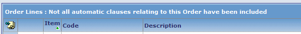
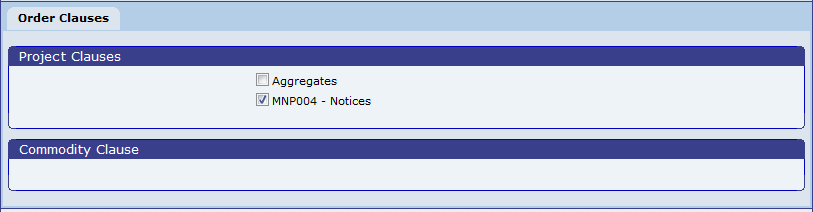

Automatic Clauses
Automatic clauses are clauses that are associated with specific projects, companies, commodities or trades. When you enter an order for a project, company, commodity or trade that has an automatic clause associated with it, will prompt you to add the clause to the order.
To include automatic clauses on an order:
- Whenever the Order Lines screen is refreshed, if there are any project, company, commodity or trade clauses relevant to the order that have not already been added to the order, displays a warning message immediately above the Order Lines heading.
Automatic Clauses Warning

- When you click
 to move on from the order lines screen, displays a screen showing which automatic clauses should be added to the order.
to move on from the order lines screen, displays a screen showing which automatic clauses should be added to the order.
Order Clauses Selection Screen
If you display the order lines screen in "summary mode" (by clicking the order number link from the workbench) does not show the order clauses screen.
-
the boxes for the clauses you want to add.
- Click
 .
.
If you un all available clauses, assumes you do not want to include any clauses on the order and will not prompt again.
You can also choose clauses at any time by selecting the Order Clauses item on the Options menu. This shows the same order clauses selection screen.
Configuration
You can add clauses to companies, projects, commodities, codes and trade codes using the Clauses tab on the relevant maintenance routine; for example: Company Details, Project Summary or Materials.